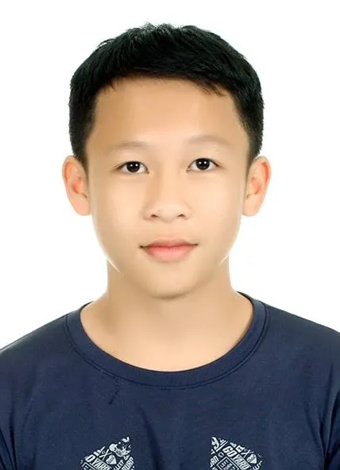

Research Assistant
National Taiwan University
Marine engineering and ocean technology research
Assisted with literature reviews and recreation of marine maps from reference material.
I study hydraulic and ocean engineering, and build software people use.
At NCKU, I've worked on reservoir data cleaning and LSTM research. I also built an overtime management system now used by NCKU's teaching center and a live business website for 大倉代領. My other work includes an event check-in backend, marine data analysis, and software side projects.

01 / ACHIEVEMENTS
Competition, academic, technical-certification and endurance records. Public evidence is linked where currently available; the rest are listed from personal records.
02 / EXPERIENCE
My experience spans research assistance and project management, including literature review, marine maps, hydrological data, LSTM research, and website setup.
Research Assistant
Marine engineering and ocean technology research
Assisted with literature reviews and recreation of marine maps from reference material.
Research Assistant & Project Manager (PM)
LSTM research
Worked on Long Short-Term Memory (LSTM) research while also serving as PM.
Research Assistant
Reservoir data and automated reporting
Cleaned and consolidated reservoir hydrological data and built automated reservoir reports.
Research Assistant
Web systems and video production
Helped set up websites, developed the overtime management system and faculty-camp check-in system, and handled video editing and voice-over.
04 / WHAT I DO
Outside class, I spend a lot of time building websites, working with data, and writing small tools to make repetitive tasks easier.
I've worked with buoy observations—handling missing values, making charts, and building forecasts. Getting messy data into shape is often the part that takes the most time.
I've built event check-in tools, overtime management systems, a shareholder-gift service, and an online chess game. I've worked on the frontend, backend, database, and deployment.
I write scripts to handle repetitive steps, like content generation, scheduled publishing, and logging job results so I can find out what went wrong when something fails.
05 / CONTACT
My public contact channel is GitHub. A bilingual CV is available for applications and forwarding.